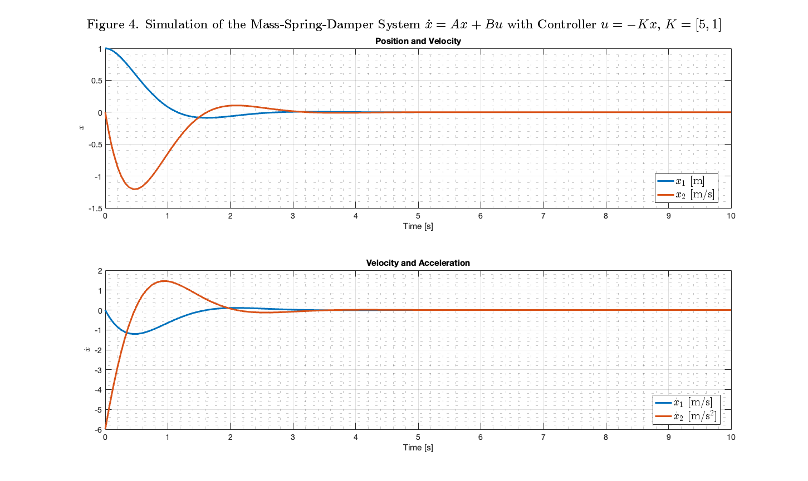
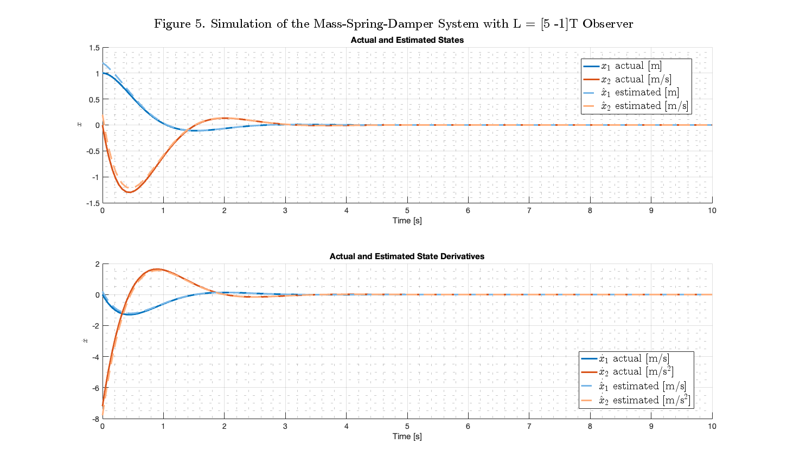
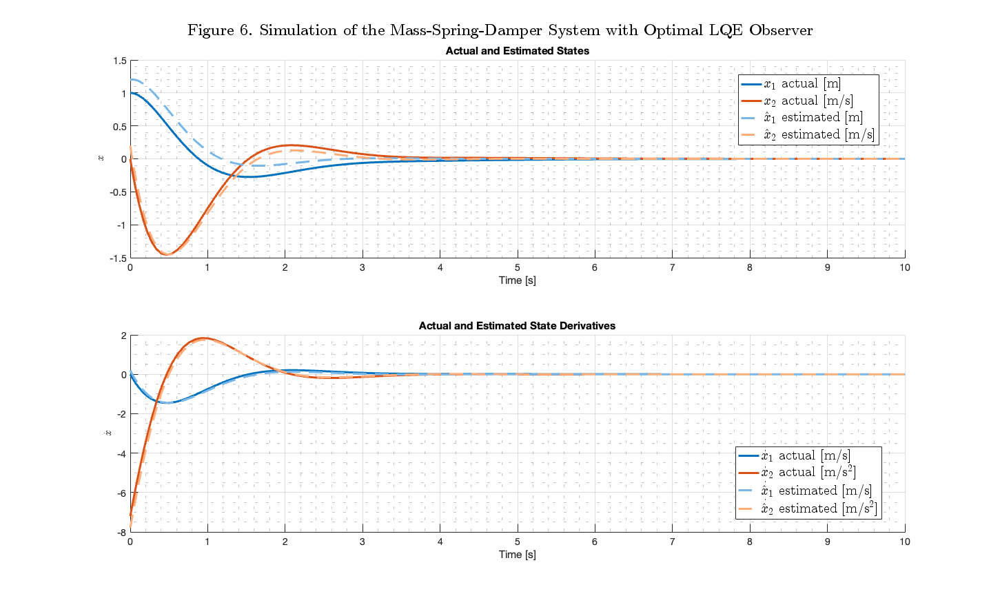

ROB699_HW6_P2
Analyzing LQR controller of a spring-mass-damper system
Contents
Clean Up
clear
clc
close all
Define the System
% Define System Variables syms m k b syms x dx ddx u % Define the Numerical Values of the System Parameters m_val = 1; % kg b_val = 2; % Ns/m k_val = 1; % N/m % System Dynamics Equation eq = m*ddx + b*dx + k*x == u; % Solve for the Acceleration ddx = solve(eq, ddx); ddx = collect(ddx, [x, dx, u]) % State Space Representation of the System A = [0, 1; -k/m, -b/m]; B = [0; 1/m]; % Substitude numerical values for the system parameters A_val = eval(subs(A, [m, b, k], [m_val, b_val, k_val])); B_val = eval(subs(B, [m, b, k], [m_val, b_val, k_val])); % dx = A_val*x + B_val*u
ddx = (-k/m)*x + (-b/m)*dx + u/m
Problem 2A: Simulate controller u = -Kx, K = [5, 1]
% Define System K = [5, 1]; A_cl = A_val - B_val*K; % dx = A_val*x - B_val*K*x = (A_val - B_val*K)*x % Define Simulation Parameters x_o = [1; 0]; % x(0) = 1, dx(0) = 0 t_span = [0 10]; % Simulate the Closed Loop System [t, x] = ode45(@(t, x) A_cl*x, t_span, x_o); % Evaluate the dx(t) from the Simulation Results dx = x * A_cl'; % dx = (A_cl*x')' = x*A_cl' to match the dimensions of x % Plot the Simulation Results % Create figure with specific size fig = figure('Position', [100, 100, 1900, 1400]); % First subplot subplot(2, 1, 1) plot(t, x(:, 1), 'LineWidth', 3, 'Color', '#0072BD') hold on plot(t, x(:, 2), 'LineWidth', 3, 'Color', '#D95319') xlabel('Time [s]', 'FontSize', 16) ylabel('$$\displaystyle{x}$$', 'Interpreter', 'latex', 'FontSize', 24, 'FontWeight', 'bold') title('Position and Velocity', 'FontSize', 24) legend('$x_1$ [m]', '$x_2$ [m/s]', 'Interpreter', 'latex', 'FontSize', 20, 'Location', 'best') grid on grid minor set(gca, 'FontSize', 14) hold off % Second subplot subplot(2, 1, 2) plot(t, dx(:, 1), 'LineWidth', 3, 'Color', '#0072BD') hold on plot(t, dx(:, 2), 'LineWidth', 3, 'Color', '#D95319') xlabel('Time [s]', 'FontSize', 16) ylabel('$$\displaystyle{\dot{x}}$$', 'Interpreter', 'latex', 'FontSize', 24, 'FontWeight', 'bold') title('Velocity and Acceleration', 'FontSize', 24) legend('$\dot{x}_1$ [m/s]', '$\dot{x}_2$ [m/s$^2$]', 'Interpreter', 'latex', 'FontSize', 20, 'Location', 'best') grid on grid minor set(gca, 'FontSize', 14) hold off sgtitle('Figure 4. Simulation of the Mass-Spring-Damper System $$\displaystyle{\dot{x} = Ax + Bu}$$ with Controller $$u = -Kx$$, $$K = [5, 1]$$', 'Interpreter', 'latex', 'FontSize', 24, 'FontWeight', 'bold') saveas(fig, 'Figure 4. Mass Spring Damper. 2A.png', 'png')
Problem 2B: Using only the Available States for Measurement
% Define the Obser Parameters C = [1, 0]; L = [5, -1]'; % Define the System Parameters x_a = [1; 0]; % x(0) = 1, dx(0) = 0 (true initial conditions) x_m = [1.2; 0.2]; % x(0) = 1.2, dx(0) = 0.2 (measured approximations) x_init = [x_a; x_m]; % Initial State Vector t_span = [0 10]; % Simulate the System [t, x] = ode45(@(t, x) systemDynamicsWObserver(t, x, A_val, B_val, K, L, C, C*x(1:2)), t_span, x_init); % Evaluate Past Derivatives x_hat = x(:, 3:4); y_measured = (C*x_hat')'; dx_hat = observerEstimate(x_hat', A_val, B_val, K, L, C, y_measured')'; % transpose to match the dimensions of x x_act = x(:, 1:2); u = -K*x_hat'; dx_act = simulateLinearSystem(x_act', A_val, B_val, u)'; % transpose to match the dimensions of x % Plot the Simulation Results plotSystemStates(t, x, x_hat, dx_act, dx_hat, ... 'Simulation of the Mass-Spring-Damper System with L = [5 -1]T Observer', ... 5, 'Figure 5. Mass Spring Damper. 2B.png');
Problem 2C: Constructing the Observer using LQE
% Define the Observer Parameters G = eye(2); Q = diag([10^(-4), 10^(-4)]); R = 0.1; L = lqe(A_val, G, C, Q, R); % Define System Parameters x_a = [1; 0]; % x(0) = 1, dx(0) = 0 (true initial conditions) x_m = [1.2; 0.2]; % x(0) = 1.2, dx(0) = 0.2 (measured approximations) x_init = [x_a; x_m]; t_span = [0 10]; % Simulate the System [t, x] = ode45(@(t, x) systemDynamicsWObserver(t, x, A_val, B_val, K, L, C, C*x(1:2)), t_span, x_init); % Evaluate Past Derivatives x_hat = x(:, 3:4); y_measured = (C*x_hat')'; dx_hat = observerEstimate(x_hat', A_val, B_val, K, L, C, y_measured')'; % transpose to match the dimensions of x x_act = x(:, 1:2); u = -K*x_hat'; dx_act = simulateLinearSystem(x_act', A_val, B_val, u)'; % transpose to match the dimensions of x % Plot the Simulation Results plotSystemStates(t, x, x_hat, dx_act, dx_hat, ... 'Simulation of the Mass-Spring-Damper System with Optimal LQE Observer', ... 6, 'Figure 6. Mass Spring Damper. 2C.png');
Problem 2D: Repeat 2B adn 2C with added Noise
% Define Noise Parameters sigma = 0.1; mean = 0; % First case: Using original observer from 2B % Define the Observer Parameters C = [1, 0]; L = [5, -1]'; % Define System Parameters x_a = [1; 0]; % x(0) = 1, dx(0) = 0 (true initial conditions) x_m = [1.2; 0.2]; % x(0) = 1.2, dx(0) = 0.2 (measured approximations) x_init = [x_a; x_m]; % Define Simulation Parameters t_span = 0:0.01:10; % controlling time steps to prevent ode45 from compensating for the noise generated_noize = sigma * randn(size(C,1), length(t_span)) + mean; % Simulate the System with Noisy Measurements [t, x] = ode45(@(t, x) systemDynamicsWObserver(t, x, A_val, B_val, K, L, C, ... getNoisyMeasurement(t, x(1:2), C, generated_noize, t_span)), t_span, x_init); % Evaluate Past Derivatives x_hat = x(:, 3:4); y_measured = (C*x_hat' + generated_noize)'; dx_hat = observerEstimate(x_hat', A_val, B_val, K, L, C, y_measured')'; x_act = x(:, 1:2); u = -K*x_hat'; dx_act = simulateLinearSystem(x_act', A_val, B_val, u)'; % Plot the Simulation Results plotSystemStates(t, x, x_hat, dx_act, dx_hat, ... 'Mass-Spring-Damper System with Original Observer L = [5, -1] and Noisy Measurements', ... 7, 'Figure 7. Mass Spring Damper. 2D Original.png'); % Second Case: Using optimal LQE observer from 2C % Define the Observer Parameters G = eye(2); Q = diag([10^(-4), 10^(-4)]); R = 0.1; L = lqe(A_val, G, C, Q, R); % Simulate the System with the Same System Parameters [t, x] = ode45(@(t, x) systemDynamicsWObserver(t, x, A_val, B_val, K, L, C, ... getNoisyMeasurement(t, x(1:2), C, generated_noize, t_span)), t_span, x_init); % Evaluate Past Derivatives x_hat = x(:, 3:4); y_measured = (C*x_hat' + generated_noize)'; dx_hat = observerEstimate(x_hat', A_val, B_val, K, L, C, y_measured')'; x_act = x(:, 1:2); u = -K*x_hat'; dx_act = simulateLinearSystem(x_act', A_val, B_val, u)'; % Plot the Simulation Results plotSystemStates(t, x, x_hat, dx_act, dx_hat, ... 'Mass-Spring-Damper System with Optimal LQE Observer and Noisy Measurements', ... 8, 'Figure 8. Mass Spring Damper. 2D LQE.png');
Helper Functions
function x_dot = systemDynamicsWObserver(t, x, A, B, K, L, C, y_sense) % Control Input & Observer Prediction (Avalible) x_hat = x(3:4); u = -K*x_hat; x_hat_dot = observerEstimate(x_hat, A, B, K, L, C, y_sense); % Compute the Actual Dynamics (Hidden Truth) x_act = x(1:2); x_act_dot = simulateLinearSystem(x_act, A, B, u); % Combine the Dynamics x_dot = [x_act_dot; x_hat_dot]; end function plotSystemStates(t, x, x_hat, dx_act, dx_hat, figureTitle, figureNumber, saveFileName) % Create figure with specified size fig = figure('Position', [100, 100, 1900, 1400]); % Plot states subplot(2,1,1) hold on plot(t, x(:, 1), 'LineWidth', 3, 'Color', '#0072BD') plot(t, x(:, 2), 'LineWidth', 3, 'Color', '#D95319') plot(t, x_hat(:, 1), '--', 'LineWidth', 3, 'Color', '#77B6E7') plot(t, x_hat(:, 2), '--', 'LineWidth', 3, 'Color', '#FFAD7A') xlabel('Time [s]', 'FontSize', 16) ylabel('$$\displaystyle{x}$$', 'Interpreter', 'latex', 'FontSize', 24) title('Actual and Estimated States', 'FontSize', 24) legend('$x_1$ actual [m]', '$x_2$ actual [m/s]', ... '$\hat{x}_1$ estimated [m]', '$\hat{x}_2$ estimated [m/s]', ... 'Interpreter', 'latex', 'FontSize', 20, 'Location', 'best') grid on grid minor set(gca, 'FontSize', 14) % Plot derivatives subplot(2,1,2) hold on plot(t, dx_act(:,1), 'LineWidth', 3, 'Color', '#0072BD') plot(t, dx_act(:,2), 'LineWidth', 3, 'Color', '#D95319') plot(t, dx_hat(:,1), '--', 'LineWidth', 3, 'Color', '#77B6E7') plot(t, dx_hat(:,2), '--', 'LineWidth', 3, 'Color', '#FFAD7A') xlabel('Time [s]', 'FontSize', 16) ylabel('$$\displaystyle{\dot{x}}$$', 'Interpreter', 'latex', 'FontSize', 24) title('Actual and Estimated State Derivatives', 'FontSize', 24) legend('$\dot{x}_1$ actual [m/s]', '$\dot{x}_2$ actual [m/s$^2$]', ... '$\dot{\hat{x}}_1$ estimated [m/s]', '$\dot{\hat{x}}_2$ estimated [m/s$^2$]', ... 'Interpreter', 'latex', 'FontSize', 20, 'Location', 'best') grid on grid minor set(gca, 'FontSize', 14) % Set overall title sgtitle(sprintf('Figure %d. %s', figureNumber, figureTitle), ... 'Interpreter', 'latex', 'FontSize', 24, 'FontWeight', 'bold') % Save figure saveas(fig, saveFileName, 'png') end